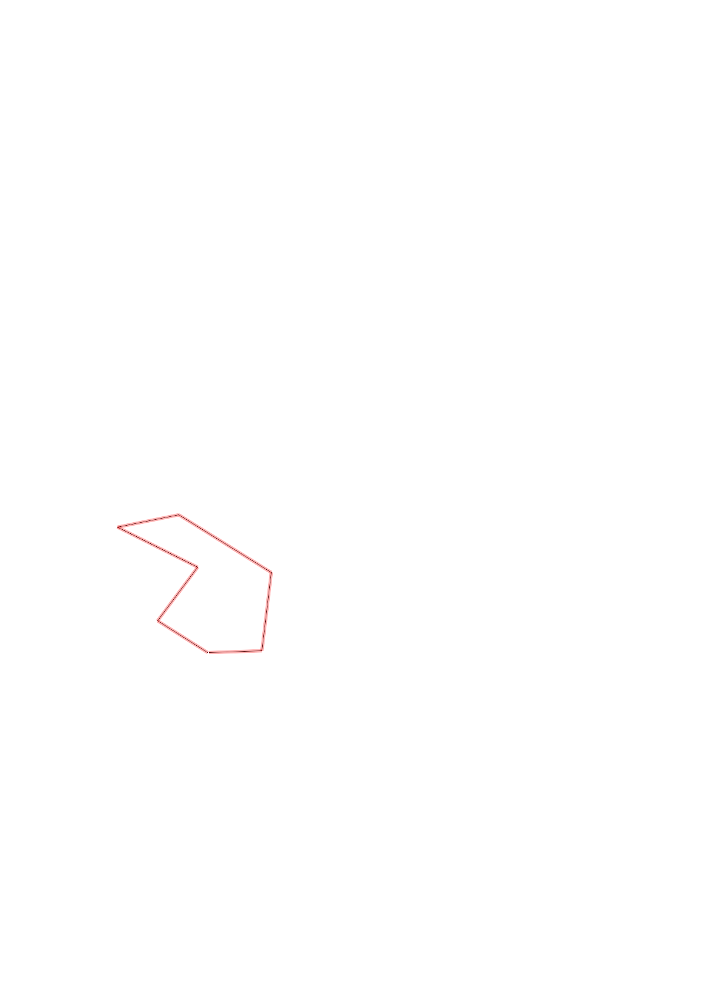
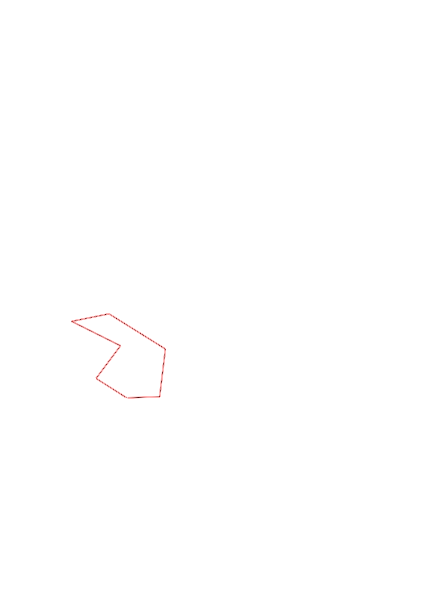

| Control |
Points |
Time Punched |
Distance |
Your Time |
Pace |
Place |
Fastest Time |
Median Time |
% Behind Fastest |
| 35 |
30 |
|
0.27 |
0:01:33 |
05:44 |
8 / 17 |
0:01:07 |
0:01:37 |
38% |
| 51 |
50 |
|
0.3 |
0:05:22 |
17:53 |
12 / 12 |
0:02:01 |
0:03:06 |
166% |
| 72 |
70 |
|
0.4 |
0:06:55 |
17:17 |
3 / 3 |
0:03:04 |
0:04:20 |
125% |
| 58 |
50 |
|
0.28 |
0:23:47 |
1:24:56 |
5 / 6 |
0:02:22 |
0:03:34 |
904% |
| 41 |
40 |
|
0.49 |
0:04:26 |
09:02 |
3 / 4 |
0:03:39 |
0:04:05 |
21% |
| 63 |
60 |
|
0.35 |
0:17:55 |
51:11 |
6 / 6 |
0:02:36 |
0:04:24 |
589% |
| Finish |
0 |
|
0.23 |
0:01:40 |
07:14 |
7 / 11 |
0:00:57 |
0:01:23 |
75% |
Total Distance Covered: 2.32km
Points Scored: 300
Late Penalty: -40
Final Score: 260
Total Time: 1hours 1minutes 38seconds
Efficiency: 112.07 points/km
 
